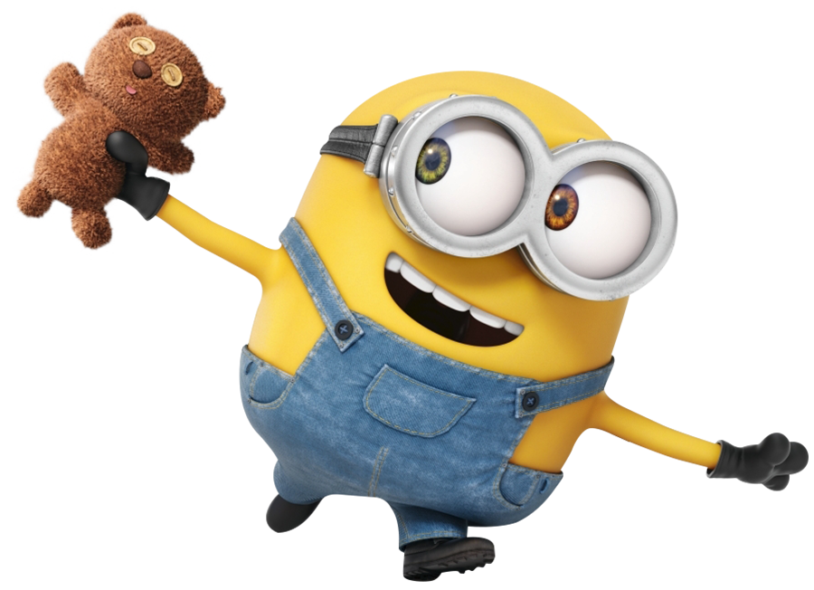

Meu nome é Aisha Andretto Lemos, tenho 17 anos e quero cursar engenharia civil.
As coisas que mais gosto de fazer são:
- Ouvir música
- Comer
- Caminhar
- Dormir
Um dos meus cantores favoritos e a música que gosto muito:
Bruno Mars - Die With a SmileOlhos que olham são comuns. Olhos que veem são raros. - J.Oswald Sanders